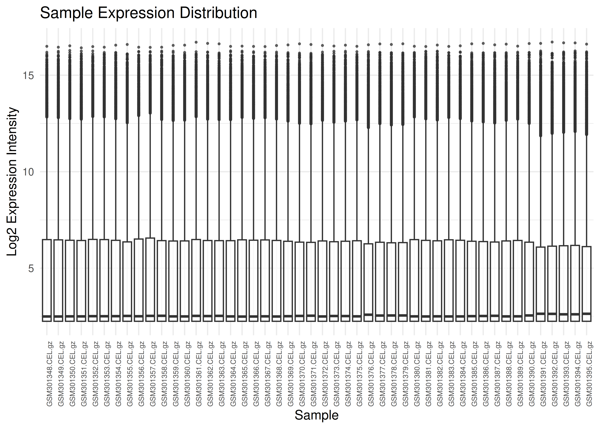
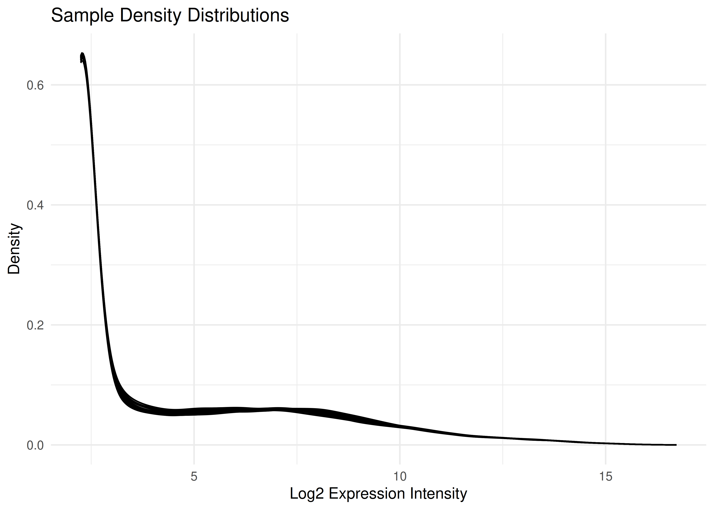

Hughes2009: Tutorial and Data Processing
Hughes2009-tutorial.RmdInstallation
# Install via devtools
if (!requireNamespace("devtools", quietly = TRUE)) install.packages("devtools")
devtools::install_github("altintasali/Hughes2009")Raw Expression Data
First, we load the raw eset object and perform initial
quality checks to ensure data integrity.
show(eset)
#> ExpressionSet (storageMode: lockedEnvironment)
#> assayData: 45101 features, 48 samples
#> element names: exprs
#> protocolData
#> sampleNames: GSM301348.CEL.gz GSM301349.CEL.gz ... GSM301395.CEL.gz
#> (48 total)
#> varLabels: ScanDate
#> varMetadata: labelDescription
#> phenoData
#> sampleNames: GSM301348 GSM301349 ... GSM301395 (48 total)
#> varLabels: title geo_accession ... relation.1 (33 total)
#> varMetadata: labelDescription
#> featureData
#> featureNames: 1415670_at 1415671_at ... AFFX-r2-P1-cre-5_at (45101
#> total)
#> fvarLabels: PROBEID SYMBOL GENENAME MAS5_CALL
#> fvarMetadata: labelDescription
#> experimentData: use 'experimentData(object)'
#> Annotation: mouse4302Here is how the expression matrix look like:
expression_matrix_raw <- exprs(eset)
print(expression_matrix_raw[1:6, 1:6])
#> GSM301348.CEL.gz GSM301349.CEL.gz GSM301350.CEL.gz
#> 1415670_at 10.047478 10.144396 10.032522
#> 1415671_at 10.742481 10.572902 10.678695
#> 1415672_at 11.134648 11.113839 11.060911
#> 1415673_at 8.123238 8.375692 8.467279
#> 1415674_a_at 8.814808 8.788226 8.699853
#> 1415675_at 7.563833 7.303640 7.322527
#> GSM301351.CEL.gz GSM301352.CEL.gz GSM301353.CEL.gz
#> 1415670_at 9.804604 9.990287 9.682311
#> 1415671_at 10.648379 10.714002 10.591531
#> 1415672_at 11.280906 11.074163 11.186339
#> 1415673_at 8.129796 8.236522 8.042468
#> 1415674_a_at 8.768019 8.587714 8.366756
#> 1415675_at 7.430643 7.668505 7.474612Boxplots
Visualizing expression distributions helps identify outliers or normalization issues.
plot_boxplots(eset)
Density Plots
Visualizing all 96 samples overlaid helps ensure there are no massive outliers or batch effects in the normalization.
plot_densities(eset)
MD Plots
In the limma
R package, an MD plot (Mean-Difference plot) is a specific type of MA
plot used to visualize gene expression data. Its primary role in Quality
Control (QC) is to identify systematic biases and assess the
effectiveness of normalization.
Below is the MD plot for the first sample:
Filtering
Probes with low expression or inconsistent signal (MAS5
“Absent” calls) can introduce noise. We filter the dataset to retain
only high-quality, reliable probes. You can play around with
min_present parameter below to find the optimum filtering
option.
# Filter for probes present in at least 20 samples
eset_filt <- filter_mas5(eset, min_present = 20)
cat(sprintf("Original number of probes: %d\n", nrow(eset)))
#> Original number of probes: 45101
cat(sprintf("Probes remaining after filtering: %d\n", nrow(eset_filt)))
#> Probes remaining after filtering: 18207It is also a good practice to run QC diagnostics after filtering.
Collapsing by Gene Name
Since multiple probes may target the same gene, we collapse the
probe-level data to the gene level using the WGCNA’s
collapseRows
function (MaxMean method).
eset_gene <- collapse_eset(eset_filt, method = "MaxMean")
expression_matrix_gene <- exprs(eset_gene)
print(expression_matrix_gene[1:6, 1:6])
#> GSM301348.CEL.gz GSM301349.CEL.gz GSM301350.CEL.gz
#> 0610005C13Rik 10.284146 10.113265 10.205917
#> 0610010K14Rik 7.031768 7.184750 7.147965
#> 0610030E20Rik 7.544658 7.622270 7.650212
#> 0610040B10Rik 4.385660 4.527042 4.495156
#> 0610040J01Rik 8.168452 8.135460 7.934248
#> 0710001D07Rik 5.251084 4.523976 4.477646
#> GSM301351.CEL.gz GSM301352.CEL.gz GSM301353.CEL.gz
#> 0610005C13Rik 10.158957 10.139734 10.150583
#> 0610010K14Rik 7.215943 7.087089 7.107502
#> 0610030E20Rik 7.823527 7.897321 8.062840
#> 0610040B10Rik 4.873537 4.765729 4.350292
#> 0610040J01Rik 8.032270 7.943563 7.893394
#> 0710001D07Rik 4.410543 4.265482 4.517288